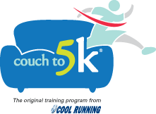

Couch to 5k Training
All About the Couch to 5K Training Program
Hello. We’re very excited about this year’s Spring Couch to 5K Training Program.
This page will hopefully answer all of your questions and be your starting point should you need any additional information. If you haven’t already seen it, the 2019 BRC Couch to 5K Flier also tells you a bit. Our program is based largely on Coolrunning.com’s Couch to 5K Running Plan .
Where can I find out more?
There is basic information on the 2019 BRC Couch to 5K Flier and there is an informational meeting held on February 19, 2019 at the Nichols Center (Room 107, 515 East D St, Belleville, IL).
When do we start?
Our first run is held on February 26, 2019.
How much?
- Option #1: $10 for a 9-week training program and BRC Couch to 5k T-shirt
- Option #2: $20 for a 1 Year Membership to the Belleville Running club, 9-week training program, and BRC Couch to 5k T-shirt
- Option #3: $40 for Law Day Run Entry, 1 Year Membership to the Belleville Running club, 9-week training program, and BRC Couch to 5k T-shirt
How long is the program?
The goal of the program is to get you ready for a 5 kilometer (3.1 miles) race in 9 weeks.
How often do I need to run?
The program has you walking and running multiple times a week. We will only be meeting as a group on Monday evenings early on and then on a couple of Saturday mornings at the end of the program. So you will be on your own for many of your runs. It is very important that you try to stick to the schedule.
FAQ for Beginning Runners
What is body glide? Should I stretch before I run? Should I carb load right before I go for a run? We are certain that you have tons of questions about running. We were all in the same boat at one time. That is why we polled our group members and came up with the most frequently asked questions for beginner runners. Please refer to this document and please ask anything else that comes to mind.
Additional Resources
2019 Spring Couch to 5k Info
- 2019 BRC Couch to 5K Flier
- BRC Spring 5k Training Schedule 2019
- 2018 Spring BRC Couch to 5K Application – Available on the 2019 Couch to 5K Flier
- beginnerfaq
- Chiro-Med
- 2019 Law Day Run 5K 
{kind=link}